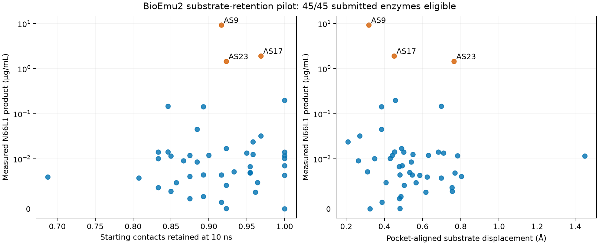

This pilot did not establish the hypothesized positive retention–yield association.
180/180 endpoints; selected starting cofolds, 1 ns and 10 ns independent endpoints, no contact conditioning.

{
"rho": 0.11329524421934774,
"ci95": [
-0.1825688101597127,
0.38910718215141826
],
"permutation_p_two_sided": 0.46315368463153683,
"n_enzymes": 45,
"bootstrap_replicates": 5000,
"permutations": 10000,
"limitation": "Nominal enzyme-level uncertainty; evolutionary dependence not accounted for."
}| id | activity_ugml | selected_start_poses | good_start | n_geometry_eligible_10ns | native_contact_retention_eligible_10ns | pocket_centroid_displacement_A_eligible_10ns | static_weighted_attack_angle_deg |
|---|---|---|---|---|---|---|---|
| AS1 | 0.0033 | 38 | True | 2 | 0.9615 | 0.6176 | 146.7178 |
| AS2 | 0.0322 | 20 | True | 2 | 0.9688 | 0.2714 | 147.0465 |
| AS3 | 0.143 | 13 | True | 2 | 0.8929 | 0.3855 | 163.4914 |
| AS4 | 0.012 | 27 | True | 2 | 0.9 | 0.6313 | 165.844 |
| AS5 | 0.0047 | 34 | True | 2 | 0.9231 | 0.5043 | 159.718 |
| AS6 | 0.0119 | 24 | True | 2 | 0.875 | 0.4415 | 159.5482 |
| AS7 | 0.0084 | 11 | True | 2 | 0.9545 | 0.4782 | 149.1088 |
| AS8 | 0.1466 | 10 | True | 2 | 0.8462 | 0.6988 | 154.5157 |
| AS9 | 9.2828 | 6 | True | 2 | 0.9167 | 0.3189 | 164.9531 |
| AS10 | 0.0169 | 47 | True | 2 | 0.9231 | 0.4905 | 149.6898 |
| AS11 | 0.0101 | 16 | True | 2 | 0.8333 | 0.3493 | 164.7152 |
| AS12 | 0.0238 | 45 | True | 2 | 0.9583 | 0.2098 | 150.4894 |
| AS13 | 0.0041 | 44 | False | 0 | None | None | 128.6635 |
| AS14 | 0.0043 | 13 | True | 2 | 0.8333 | 0.7549 | 148.1225 |
| AS15 | 0.0052 | 42 | True | 2 | 0.8571 | 0.5662 | 162.5619 |
| AS16 | 0.0067 | 26 | True | 2 | 1.0 | 0.5858 | 149.6801 |
| AS17 | 1.9076 | 18 | True | 2 | 0.9688 | 0.4517 | 167.9372 |
| AS18 | 0.0141 | 22 | True | 2 | 1.0 | 0.5019 | 162.3762 |
| AS19 | 0.0094 | 36 | True | 2 | 0.8846 | 0.5413 | 160.021 |
| AS20 | 0.0001 | 43 | True | 2 | 0.9231 | 0.482 | 153.7635 |
| AS21 | 0.0086 | 45 | True | 2 | 1.0 | 0.4937 | 125.1851 |
| AS22 | 0.0064 | 31 | True | 2 | 0.6875 | 0.6248 | 162.7835 |
| AS23 | 1.4507 | 0 | True | 2 | 0.9231 | 0.7651 | 163.3883 |
| AS24 | 0.0134 | 4 | True | 2 | 0.95 | 0.7105 | 155.4695 |
| AS25 | 0.0142 | 15 | True | 2 | 0.8462 | 0.4538 | 145.4532 |
| AS26 | 0.0053 | 46 | True | 2 | 0.9643 | 0.4089 | 148.2695 |
| AS27 | 0.0096 | 31 | True | 2 | 0.8667 | 0.2641 | 153.8673 |
| AS28 | 0.0001 | 5 | False | 0 | None | None | 93.5104 |
| AS29 | 0.0117 | 48 | True | 2 | 1.0 | 0.7838 | 157.6021 |
| AS30 | 0.0072 | 33 | True | 2 | 0.9545 | 0.7701 | 143.5092 |
| AS31 | 0.0 | 45 | True | 2 | 1.0 | 0.3251 | 150.2587 |
| AS32 | 0.0141 | 37 | True | 2 | 0.8333 | 0.6834 | 161.4005 |
| AS33 | 0.0073 | 23 | True | 2 | 0.9545 | 0.5331 | 139.6708 |
| AS34 | 0.0115 | 28 | True | 2 | 0.85 | 1.4505 | 150.6814 |
| AS35 | 0.0102 | 39 | True | 2 | 1.0 | 0.431 | 137.5802 |
| AS36 | 0.0607 | 28 | False | 0 | None | None | 126.371 |
| AS37 | 0.0068 | 26 | True | 2 | 0.8929 | 0.4818 | 153.6989 |
| AS38 | 0.0013 | 9 | True | 2 | 0.9167 | 0.3881 | 164.637 |
| AS39 | 0.0074 | 39 | True | 2 | 0.9333 | 0.3119 | 146.2845 |
| AS40 | 0.0062 | 14 | True | 2 | 0.8077 | 0.6985 | 156.5372 |
| AS41 | 0.1982 | 49 | True | 2 | 1.0 | 0.458 | 153.6129 |
| AS42 | 0.0125 | 9 | True | 2 | 0.9583 | 0.5499 | 166.199 |
| AS43 | 0.0021 | 38 | True | 2 | 0.875 | 0.4794 | 150.5357 |
| AS44 | 0.0452 | 49 | True | 2 | 0.8846 | 0.3854 | 153.0539 |
| AS45 | 0.0068 | 33 | True | 2 | 0.9167 | 0.5465 | 147.8811 |
| AS46 | 0.0065 | 46 | True | 2 | 0.875 | 0.8041 | 144.0831 |
| AS47 | 0.0025 | 43 | True | 2 | 0.8929 | 0.487 | 164.3283 |
| AS48 | 0.0035 | 25 | True | 2 | 0.85 | 0.7563 | 137.6749 |
Full statistics · Enzyme table · All endpoint measurements
All 90 endpoints at 10 ns retained pocket placement under the working retention criterion, but only 36/90 passed the starting-pose geometry screen (distance ≤4.5 Å, angle ≥150°). This supplementary check was examined after the primary analysis. Its enzyme-level yield association was weak (Spearman rho 0.17, nominal permutation p 0.252). Two endpoints per lag do not establish stable population estimates. Supplementary data and uncertainty.